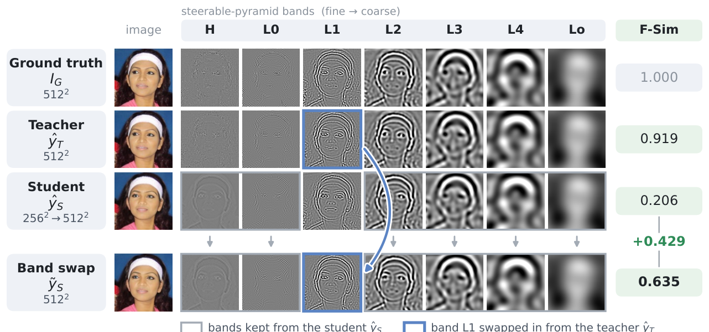
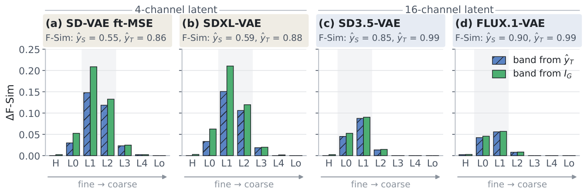
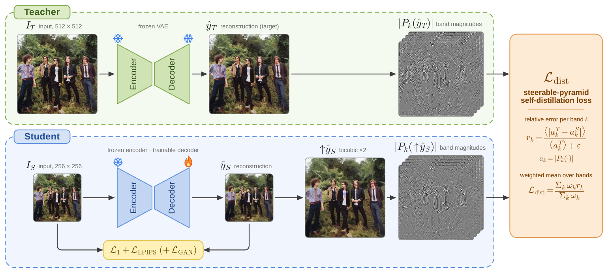
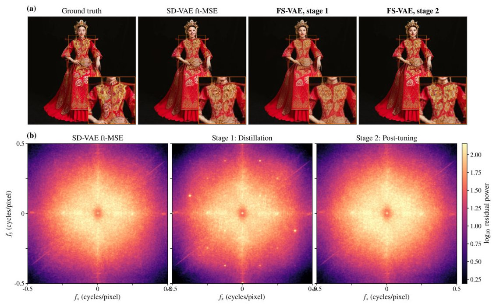
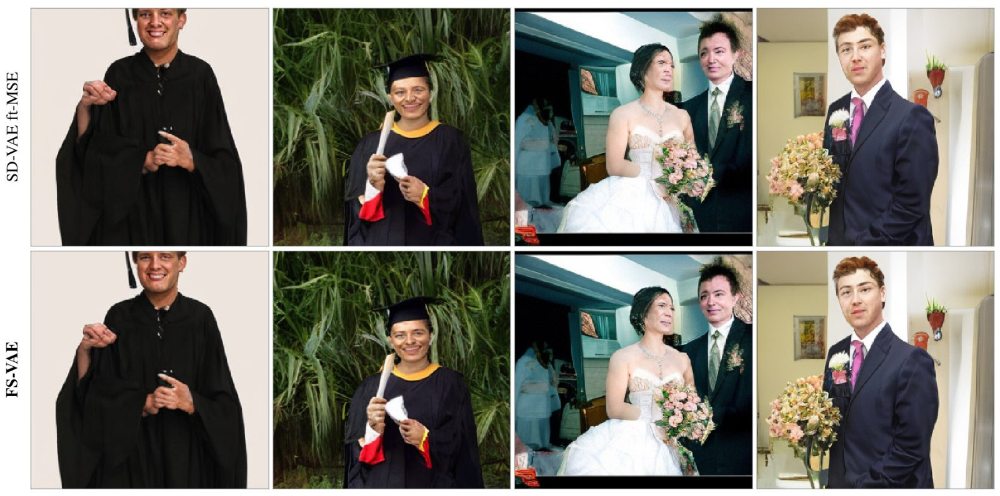

Interactive Comparison
Ground truth on the left, the selected decoder's 256² reconstruction on the right. Drag to compare.
Example
Decoder · F-Sim ↑
Input IS (256²)
Latent diffusion models (LDM) rely on VAEs to compress visual inputs for computational efficiency. Through an in-depth interpretability analysis, we show that this compression disproportionately degrades high-frequency information at lower spatial resolutions, discarding fine details such as facial features or text patterns. Building on this insight, we propose a cross-resolution finetuning framework we call FS-VAE that uses a higher-resolution VAE as a teacher to supervise its lower-resolution counterpart, recovering lost frequency information via a band-wise steerable-pyramid objective. By preserving the original architecture and latent dimensionality, FS-VAE acts as an efficient, plug-and-play replacement for existing LDM pipelines.
We decompose each image with a steerable pyramid and systematically swap subbands from the teacher ŷT (512²) or ground-truth image IG into the student reconstruction ŷS (256²), then measure identity preservation (F-Sim).

Frequency Band Swap Test: just swapping the L1 band increases the absolute F-Sim by 0.43.

Average F-Sim gains on 1000 TokBench faces. Mid- to higher frequency bands such as L1 and L2 are where signal is lost in 4-channel VAEs, while L0 and L1 is where most information is lost in 16-channel VAEs.
Takeaways from Interpretability Analysis of VAEs

Overview of FS-VAE: The teacher is a frozen VAE that takes a higher-resolution image. The student encodes the same image at a lower resolution with the same frozen encoder, and only its decoder is trained.
For each sub-band k, we take the pixel wise error on the magnitude maps between the teacher and student, normalized by the teacher's energy in that band, so low frequencies do not dominate the gradient:
\[ r_k = \frac{\langle |a^T_k - a^S_k| \rangle}{\langle a^T_k \rangle + \varepsilon}, \qquad \mathcal{L}_{\text{dist}} = \frac{\sum_k \omega_k r_k}{\sum_k \omega_k} \]
Fine-tuning only the decoder preserves the latent representation and eliminates the need to retrain downstream diffusion models.
In 4-channel VAEs, \(\mathcal{L}_{\text{dist}}\) introduces a subtle periodic grain artifact, visible as bright spots in the residual power spectrum. We briefly post-tune the decoder with ℓ1, LPIPS and a PatchGAN adversarial loss, which suppresses these spectral spikes and restores clean reconstructions.

(a) High-frequency artifacts introduced by Stage 1 are removed by Stage 2. (b) Power spectrum of the residual, averaged over 200 images: the bright spots after Stage 1 are eliminated after Stage 2.
Stage 1 restores high-frequency details missing from the 256² baseline, with substantial gains on small faces (s < 0.2: +8.7% and +10.2%). In a user study, FS-VAE was preferred in 77% of overall comparisons. For video, adding the steerable pyramid term to RefDecoder improves PSNR, SSIM, LPIPS, rFID and rFVD on TokBench (rFID 9.70 → 9.11, rFVD 9.65 → 8.11).
| Face size (relative scale s) | s < 0.1 | 0.1–0.2 | 0.2–0.3 | s > 0.3 |
|---|---|---|---|---|
| SD-VAE ft-MSE | 0.2090 | 0.2368 | 0.4054 | 0.7204 |
| FS-VAE, stage 1 | 0.2271 +8.7% | 0.2610 +10.2% | 0.4258 +5.0% | 0.7318 +1.6% |
Face similarity (F-Sim) by face size on TokBench.
| Tokenizer | PSNR ↑ | SSIM ↑ | LPIPS ↓ | rFID ↓ | rFVD ↓ | F-Sim ↑ |
|---|---|---|---|---|---|---|
| Image VAEs · 4-channel latent | ||||||
| SD-VAE-ft-MSE | 26.15 | 0.7703 | 0.1536 | 7.86 | – | 0.4542 |
| + finetune (ℓ1 + LPIPS + GAN) | 25.86 | 0.7672 | 0.1515 | 7.38 | – | 0.4595 |
| + FS-VAE, stage 1 | 26.36 | 0.7804 | 0.1525 | 9.04 | – | 0.4729 |
| + FS-VAE, stage 1+2 | 26.15 | 0.7760 | 0.1503 | 7.76 | – | 0.4667 |
| SDXL-VAE | 26.53 | 0.7904 | 0.1471 | 7.10 | – | 0.5011 |
| + FS-VAE, stage 1 | 26.78 | 0.7981 | 0.1467 | 8.37 | – | 0.5116 |
| + FS-VAE, stage 1+2 | 26.76 | 0.7974 | 0.1456 | 7.58 | – | 0.5106 |
| Video VAEs · 16-channel latent | ||||||
| Wan 2.1 VAE | 30.55 | 0.9056 | 0.1169 | 9.13 | 8.30 | 0.5215 |
| + FS-VAE, stage 1 | 30.61 | 0.9050 | 0.1168 | 9.54 | 8.80 | 0.5219 |
| RefDecoder | 30.53 | 0.9062 | 0.1203 | 10.37 | 10.68 | 0.5533 |
| + finetune (ℓ1 + LPIPS) | 30.99 | 0.9108 | 0.1151 | 9.70 | 9.65 | 0.5644 |
| + FS-VAE, stage 1 | 31.13 | 0.9130 | 0.1121 | 9.11 | 8.11 | 0.5684 |
Reconstruction quality on TokBench across image and video autoencoders. Bold: best within each block.

Generations from DiT-XL/2 decoded with the baseline decoder (top) and with FS-VAE (bottom). Both decode the same sampled latents, so any improvement comes from the decoder alone.
Ground truth on the left, the selected decoder's 256² reconstruction on the right. Drag to compare.
Example
Decoder · F-Sim ↑
Input IS (256²)